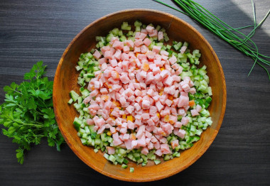

.jpg)
САЛАТ КРОЛИК С ВЕТЧИНОЙ КУКУРУЗОЙ И РИСОМ НА НОВЫЙ 2023 ГОД
Ингридиенты на 1 порцию
Рис (0,1 стак.)
Ветчина (40 гр)
Кукуруза (30 гр)
Огурцы (0,1 шт)
Твердый сыр (70 гр)
Яйца (0,8 шт)
Лук (0,1 шт)
Майонез (0,4 стол.л.)
Зелень (по вкусу)
Маслины (1 шт)
Морковь (0,1 шт)
Пошаговое приготовление
Время приготовления: 40 мин
Как сделать салат Кролик из ветчины, риса и кукурузы? Подготовьте все продукты по списку. Сыр подойдёт любой твёрдых сортов, у меня гауда. Лук по желанию можно исключить. Рис отварите до готовности согласно инструкции на упаковке. Яйца залейте холодной водой и поставьте на плиту. После закипания пламя убавьте и варите яйца 13-15 минут.
В это время займитесь остальными продуктами. С консервированной кукурузы слейте сок. Отправьте зёрна кукурузы в глубокую удобную чашку.
Половину длинного салатного огурца ополосните и обсушите салфетками. Нарежьте огурец мелкими кубиками. Отправьте в чашку.
Ветчину нашинкуйте так же маленькими кусочками и добавьте к кукурузе и огурцу.
С яиц слейте воду, остудите и очистите от скорлупы. Натрите яйца на тёрке с крупными зубками и добавьте ко всем остальным компонентам.
Добавьте в чашу с салатом отваренный и слегка остывший рис.
Посолите салат по вкусу, поперчите и заправьте майонезом. Слишком много майонеза использовать не стоит, иначе салат не будет держать форму. Всё тщательно перемешайте и попробуйте на вкус. Досолите при необходимости.
На данном этапе можно добавить мелко нарезанный лук и зелень по желанию. Салат получается вкусным и с луком и без него. Ещё раз всё перемешайте.
На плоском продолговатом блюде сформируйте голову и туловище кролика. Для удобства воспользуйтесь резиновыми одноразовыми перчатками.
С твёрдого сыра вырежьте два небольших полуовала и отложите в сторону (это будут ушки).
Остальной сыр натрите на мелкой тёрке. Выложите его тонким слоем на салат, слегка прижимая рукой.
Обложите ровным слоем всю поверхность будущего кролика.>
С помощью петрушки или укропа выложите линию, как на фото, чтобы визуально отделить голову от туловища.
В каждое ушко воткните наполовину зубочистку как на фото.
Установите ушки на голову кролика.
Маслину или оливку разрежьте пополам и сформируйте глазки на голове. Носик можно сделать из маленького кусочка ветчины или моркови.
Выложите на блюдо петрушку или укроп и украсьте кролика по своему вкусу. Для декорации используйте ветчину, сыр, морковку, огурец или оливки.
Отправьте готовый салат в холодильник настояться и охладится некоторое время.
САЛАТ МОРКОВКА С ТУНЦОМ НА НОВЫЙ 2023 ГОД
Ингридиенты на одну порцию
Картошка (0.8 шт)
Тунец консервированный (37.5 гр)
Яйца (0.8 шт)
Морковь (0.3 шт)
Майонез (12.5 гр)
Петрушка (по вкусу)
Пошаговое приготовление
Время приготовления: 1 ч
Как сделать салат Морковка на Новый 2023 год? Подготовьте для этого необходимые ингредиенты. В основе этого салата может быть любой слоеный салат, в составе которого есть морковь. Я буду готовить салат с консервированным тунцом. Выбирайте тунца в масле или в собственном соку.
Картофель и морковь помойте и отварите в кипящей воде около 20 минут до мягкости. Яйца варите в кипящей воде 7-8 минут. Затем горячую воду слейте и залейте яйца холодной водой. Отварные картофель, морковь и яйца охладите. Затем очистите яйца от скорлупы. А морковь и картофель очистите от кожуры. Баночку консервированного тунца откройте, слейте жидкость и рыбу разомните вилкой.
Для сборки салата выбирайте длинное блюдо. Картофель натрите на терке и выложите первым слоем, формируя форму морковки. Я сделала по краям небольшие бортики, чтобы удобней было выкладывать тунца. Этот слой и все следующие немного смазывайте майонезом.
Поверх картофеля распределите слой тунца. Благодаря картофельным бортикам с тунца не стекает масло, а пропитывает салат изнутри.>
Следующим слоем выложите яйца, натертые на терке. Из них формируйте небольшую горочку по длине моркови.
Последним слоем распределите тертую отварную морковь, покрывая ею салат со всех сторон. Прижимайте руками, подравнивая бока.
И в конце вставьте ботву моркови, роль которой будет исполнять петрушка или любая другая свежая зелень. Салат немного охладите и подавайте на праздничный стол. Приятного угощения!
г.Гомель
автор:Федоракова Полина
Зделано для IT академии
Реклама отсуствует